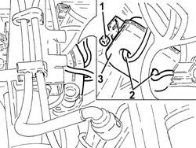

1060G70 vacum tank for controlling engine air intake r r
- Path
- Procedures > 10 ENGINE > 1060 DIESEL FUEL INJECTION > 1060G pressure pump electric control > 1060G70 vacum tank for controlling engine air intake r r
- Kind
- repair procedure (removal / refitting; the operation number is the code)
- Applies to
- all engines; all production periods
- Interactive page
- https://sloeber94.github.io/elrnDB-fDbl/en/#/2584498
Applies to: all engines; all production periods
 Removing
Removing
 Refitting
RefittingProceed with the removal 1044B10 fuel filter assembly - r + r or replace .
Proceed with the removal 1080C24 e.g.r. system solenoid - r + r .
Proceed with the removal 1060F50 fuel return manifold - r r .
1. Undo the nuts securing the vacuum reservoir.
2. Disconnect the vacuum pipes from the vacuum reservoir.
3. Remove the vacuum reservoir.

Applies to: all engines; all production periods
Refitting
RemovingConnect the vacuum pipes to the vacuum reservoir.
Refit the vacuum reservoir in its seating and fix it with the nuts.
Proceed with the refitting 1060F50 fuel return manifold - r r .
Proceed with the refitting 1080C24 e.g.r. system solenoid - r + r .
Proceed with the refitting 1044B10 fuel filter assembly - r + r or replace .
Topics linked from this page (3)
- 1044B10 fuel filter assembly - r + r or replace
- 1060F50 fuel return manifold - r r
- 1080C24 e.g.r. system solenoid - r + r